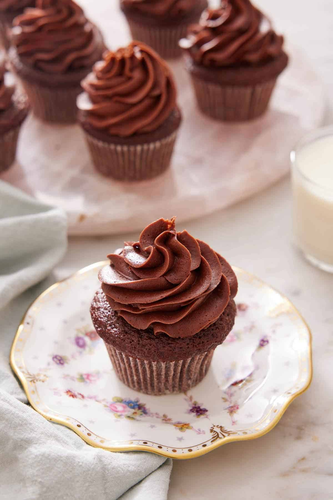

Chocolate Cupcake

Ingredients
- 1 1/4 cups Granulated Sugar (250g)
- 1 egg
- 1 1/2 cups Cake flour (200g)
- 1/4 teaspoon Salt
- 1 teaspoon Baking soda
- 1 teaspoon Vanilla essence
- 1/2 cup Vegetable oil (80ml)
- 1/4 cup Cocoa powder (25g)
- 1 cup Buttermilk (240ml)
Instructions
- Preheat the oven to 190°C and line a 12-cup muffin pan with cupcake liners.
- Whisk together the flour, sugar, cocoa powder, baking soda, nd salt in a large mixing bowl.
- In a medium mixing bowl, whisk the buttermilk, oil, egs, and vanilla until well combined.
- Pour the wet ingredients into the dry ingredients and whisk until well combined and no dry streaks of flour remain.
- Divide the cupcake batter among the cupcake liners, filling each about 2/3 full.
- Bake for 20 to 25 minutes or until a toothpick inserted into the center comes out clean.
- Cool in the pan for a few minutes, then remove and finish cooling on a wire rack. Frost the cupcakes as desired.